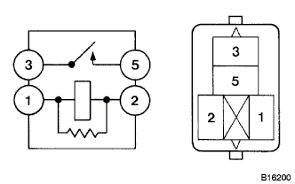

ACC Relay Inspection |
| 1. Inspect ACC Relay |
Resistance Inspection
 |
Using SST (Toyota electrical tester), inspect the resistance between each pair of relay terminals.
| Tester Connection | Condition | Standard |
|---|---|---|
| 1 - 2 | Always | 130 to 230Ω |
| 3 - 5 | Always | 10k Ω or higher |
Using SST (Toyota electrical tester), check the resistance between the terminals when battery voltage is applied between terminals 1 and 2.
| Tester Connection | Condition | Standard |
|---|---|---|
| 3 - 5 | When battery voltage is applied | Below 1 Ω |